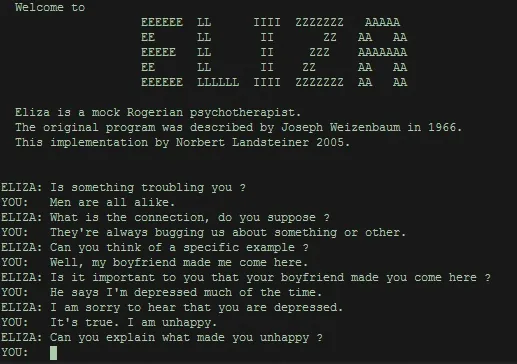
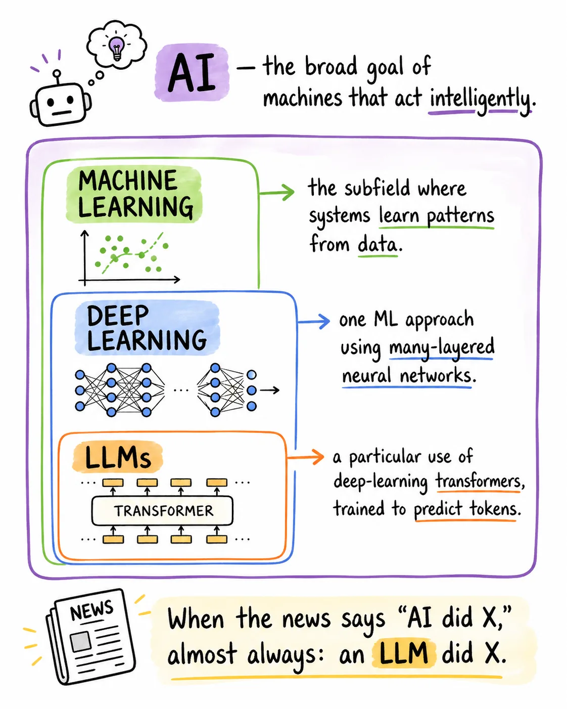
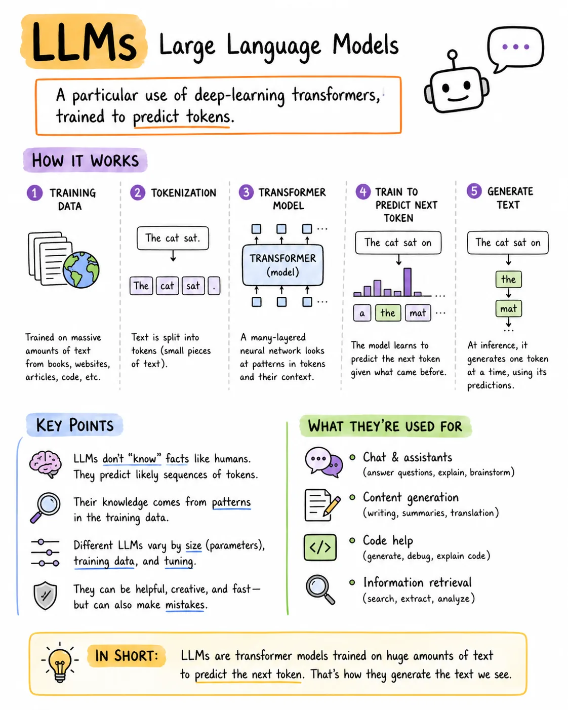
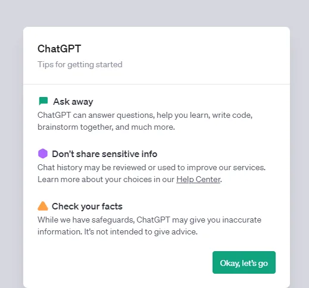
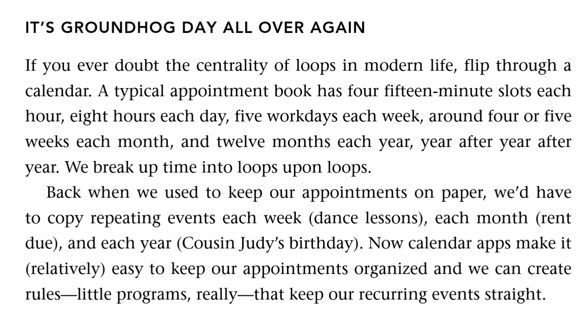
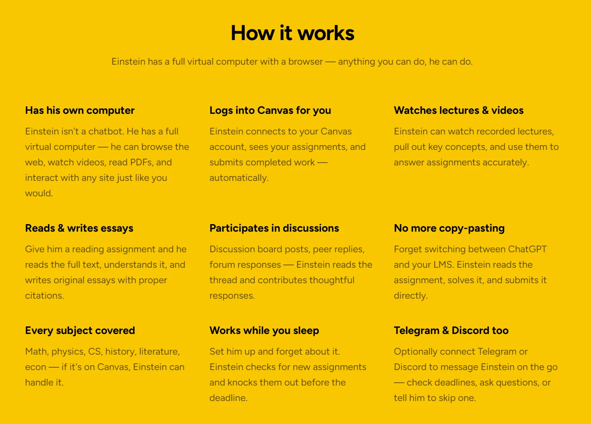

Introducing AI for DH Pedagogy
Wednesday, May 13, 2026 · 10 AM – noon · CHDR
Part 1
Modern chatbots owe a strange debt to a much simpler chatbot launched in 1966...

ELIZA, 1966 — Joseph Weizenbaum, MIT. "ELIZA — A Computer Program for the Study of Natural Language Communication Between Man and Machine" (CACM, 1966) →
I was startled to see how quickly and how very deeply people conversing with DOCTOR became emotionally involved with the computer and how unequivocally they anthropomorphized it.
Once my secretary, who had watched me work on the program for many months and therefore surely knew it to be merely a computer program, started conversing with it. After only a few interchanges with it, she asked me to leave the room.
— Joseph Weizenbaum, Computer Power and Human Reason (1976) — the ELIZA effect named
We are trying to do the same thing Weizenbaum tried to do: educate people about how these systems work, dispel the notion that they are thinking machines with a semblance of human understanding, and provide a model of how to think about them instead.
— Emily Bender & Alex Hanna, The AI Con (2025) — explicitly picking up Weizenbaum's thread
Exercise
Five minutes — open it up and notice what your brain does. We're less likely to anthropomorphise than ELIZA's 1966 audience, because we've already met more sophisticated chatbots — but try to imagine what it would be like to talk to a system like this for the first time.
Part 2
We've come a long way from ELIZA, which didn't have any of the elements we consider to be a part of modern AI. Current chatbots are mostly powered by LLMs: Large Language Models.


An LLM is a machine learning model that can complete a sentence of text. Give the model the phrase "the cat sat on the " and it will (almost certainly) suggest "mat" as the next word in the sentence.
As these models get larger and train on increasing amounts of data, they can complete more complex sentences — like "a python function to download a file from a URL is
def download_file(url):".LLMs don't actually work directly with words — they work with tokens. A sequence of text is converted into a sequence of integer tokens, so "the cat sat on the " becomes
[3086, 9059, 10139, 402, 290, 220]. This is worth understanding because LLM providers charge based on the number of tokens processed, and are limited in how many tokens they can consider at a time.
— Simon Willison, How Coding Agents Work
Exercise
Two minutes — take Willison's example off the page:

"AI" is a marketing term. It doesn't refer to a coherent set of technologies. Instead, the phrase is deployed when the people building or selling a particular set of technologies will profit from getting others to believe that their technology is similar to humans.
— Emily Bender & Alex Hanna, The AI Con
Part 3
November 30, 2022. The technology wasn't new. The interface was. And the interface was the event.
Sources: TechCrunch, GitHub Blog, VentureBeat.
Sources: Sam Altman on X, Reuters / UBS analyst note.
Part 4
The chatbot was the wrapping. Now the wrapping is shifting again — toward agents that use the LLM as a substrate, not as a product.
The conversation in 2026
The Chronicle of Higher Education — "Will Agentic AI Break Higher Education?"


Hands-on, Part 1
Same prompt, five tools. We'll move back and forth between these throughout the workshop while prioritizing Claude — to build an understanding of the different tools available.
Live demo
We pick one prompt — something with humanities texture, like asking for a summary of a primary source you brought, or a teaching question you actually have — and run it through all five. Notice the verbs each tool reaches for, the hedges, the refusals, the formatting defaults.
Exercise
Each person picks a style, tone, and subject based on your own interests — something tied to your discipline, your teaching, or a corner of your life you'd be willing to talk to a chatbot about. The pattern is the constraint; the personality and the topic are yours.
After today you should be able to explain to a colleague: where ELIZA started this, what an LLM actually is and what sits on top of it, why the ChatGPT interface was the event, and what "agentic" adds to the conversation.